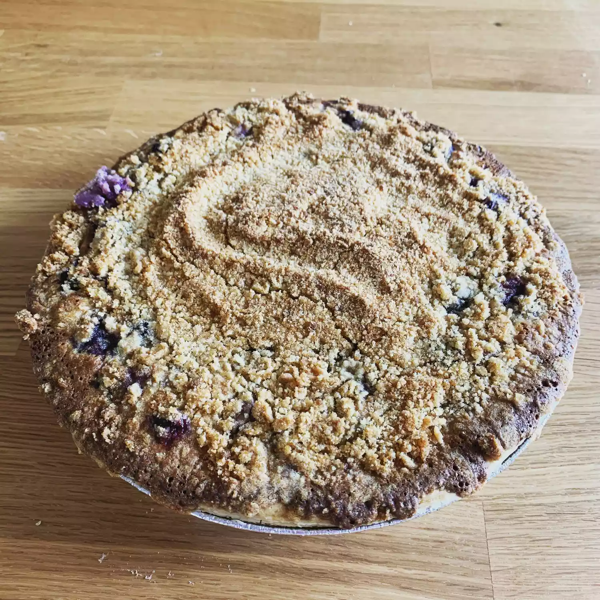

Blueberry Pie

Description
A cloud-like crust cradles a jewel-toned sea of plump, juicy blueberries,
their sweet-tart symphony bursting forth with each tender bite.
A whisper of cinnamon and nutmeg dances with the berries,
while the flaky, buttery crust melts in your mouth,
leaving behind a blissful taste of summer perfection.
Ingredients
- All-purpose flour
- Salt
- Cold & normal butter
- Ice water
- Fresh blueberries
- White sugar
- Cornstarch
- Beaten Eggs
- Lemon juice
Steps
- In a large bowl, whisk together the flour and salt.
- Using a pastry blender or two knives, cut the cold butter into the flour mixture until it resembles coarse crumbs.
- Gradually add ice water, one tablespoon at a time, mixing until the dough just comes together. Be careful not to over-mix.
- Divide the dough in half, shape into disks, wrap in plastic, and refrigerate for at least 30 minutes.
- In a large bowl, whisk together the sugar, flour, cinnamon, cornstarch and salt. Gently stir in the blueberries and lemon juice
- In a medium bowl, whisk together sugar, flour, and salt.
- Add eggs and sour cream, whisking until smooth.
- Preheat oven to 375°F (190°C).
- Roll out the pie dough on a lightly floured surface to a 12-inch circle.
- Transfer the dough to a 9-inch pie dish and trim the edges.
- Pour the blueberry filling into the prepared pie crust.
- Pour the custard mixture evenly over the blueberries.
- In a small bowl, combine the streusel ingredients and cut in the butter until crumbly.
- Sprinkle the streusel topping over the custard.
- Cover the pie edges with foil to prevent excessive browning.
- Bake for 50-60 minutes, or until the crust is golden brown and the filling is bubbling.
- Remove the foil for the last 10 minutes of baking to allow the crust to brown.
- Let the pie cool completely on a wire rack before serving.